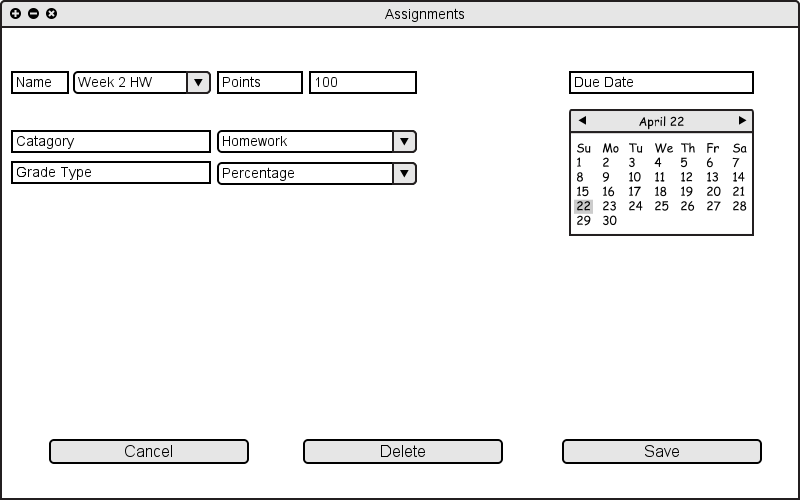

The user can edit previously created assignments by selecting them from the "Name" drop down list. After selecting an assignment, software fills the remaining field of "Assignments" page with the previously specified values for that assignment. At this point, the user can edit the values of those fields.

Figure 2.4.2 A: Editing an Assignment / Category